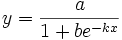

Contents |

Sigmoidal logistic function, type 3.
Reference: Seber, G. A. F., Wild, C. J. 1989. Nonlinear Regression. John Wiley & Sons, Inc. pp. 328 - 330
Number: 3
Names: a, b, k
Meanings: a = amplitude, b = coefficient, k = coefficient
Lower Bounds: a > 0.0, b > 0.0, k >0.0
Upper Bounds: none
nlf_slogistic3(x,a,b,k)
FITFUNC\SLOGIST3.FDF
Growth/Sigmoidal